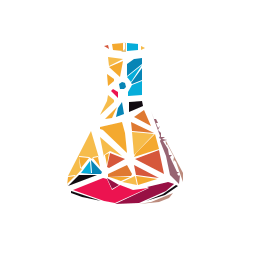

Visual models
Diagrams, animations and step-by-step models can make processes and invisible systems easier to reason about.
The Science Mentor
Personalised one-to-one support from KS1 to KS4, including GCSE Combined and separate sciences, with particular focus on Biology and Physics.

Areas of support
Lessons can develop the foundations behind a topic, connect ideas across the curriculum or prepare for GCSE questions. Particular subject focus is available in Biology and Physics.
Exam preparation combines accurate knowledge with interpreting command words, applying ideas in unfamiliar contexts and giving answers at the right level of detail.
Understanding before recall
Science becomes easier to remember when a learner can picture a process, test a model and connect new terminology to something already understood.
Diagrams, animations and step-by-step models can make processes and invisible systems easier to reason about.
Prediction, comparison and explanation help reveal understanding more clearly than copying notes alone.
Experiments can be unpacked through purpose, method, variables, results and evaluation, even when learning online.
Flexible and neurodiversity-affirming
Dense vocabulary, multi-stage processes and crowded diagrams can create barriers that are separate from scientific understanding. Lessons can adjust how information is presented and revisited.
A diagnosis is not required. Adaptations are based on the learner’s communication preferences, strengths and current capacity.
Common questions
Support can include GCSE Combined and separate sciences, with particular focus on Biology and Physics. Please share the course and current topic so suitability can be confirmed.
Yes. Lessons can develop understanding of methods, variables, results, graph skills and evaluation. They do not replace required supervised practical work.
Yes. A plan can alternate subjects or change focus around current priorities. The structure and price are agreed clearly.
Use the free introduction to discuss the learner’s course, current goals and the most suitable session structure.